ASOCIATIA NATIONALA A SALVATORILOR MONTANI DIN ROMANIA
PROCEDURI ȘI TEHNICI DE BAZĂ ÎN SALVAREA MONTANĂ
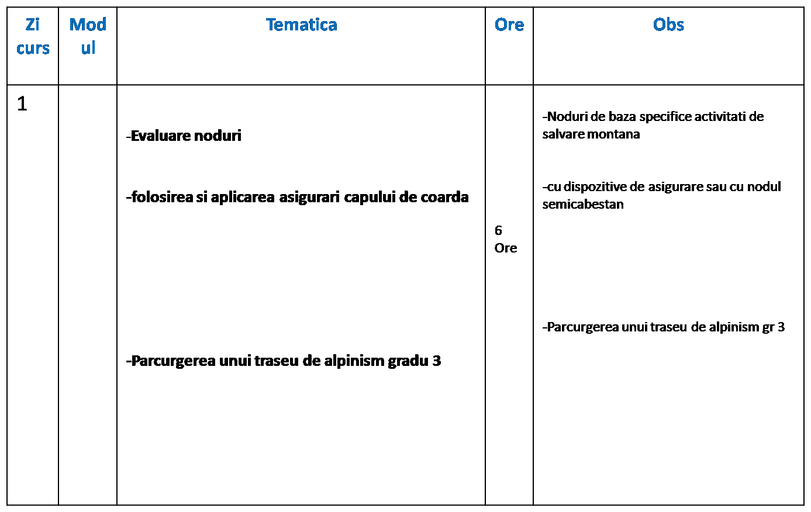
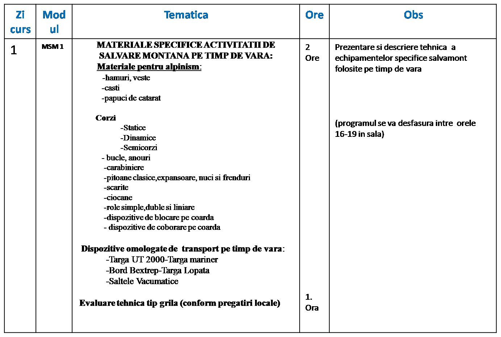
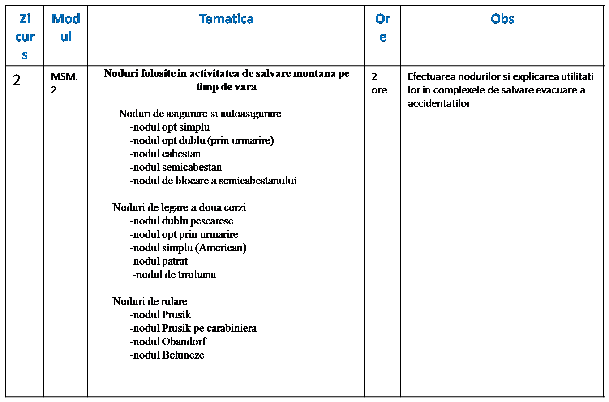
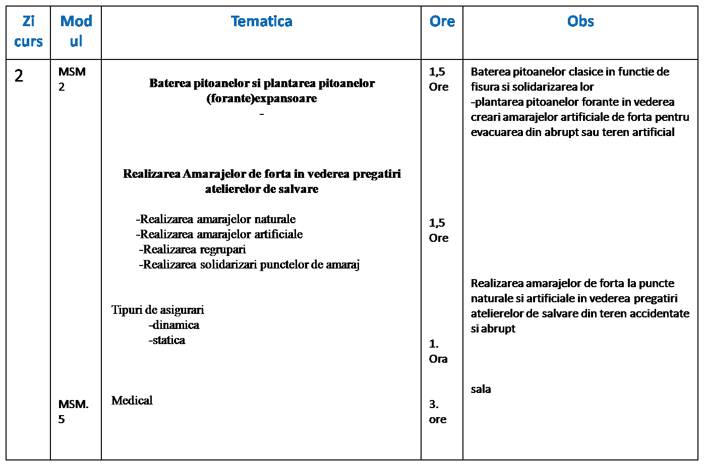
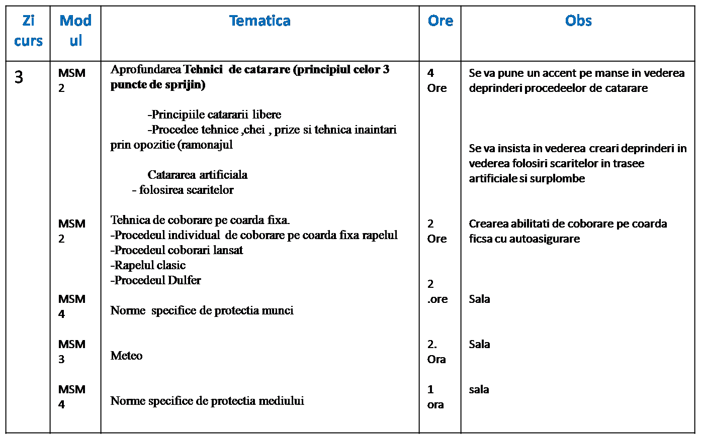
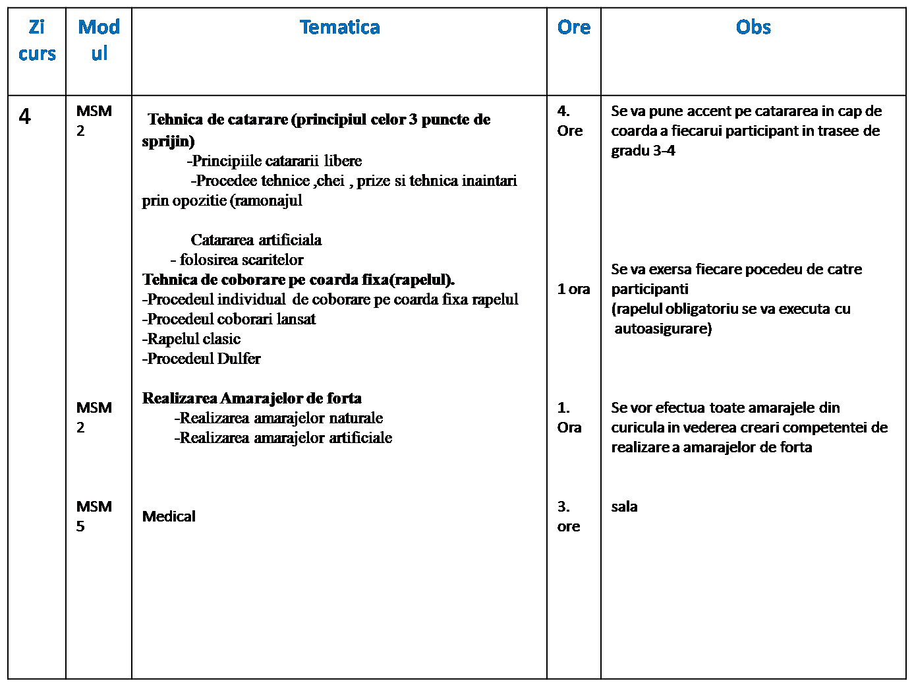
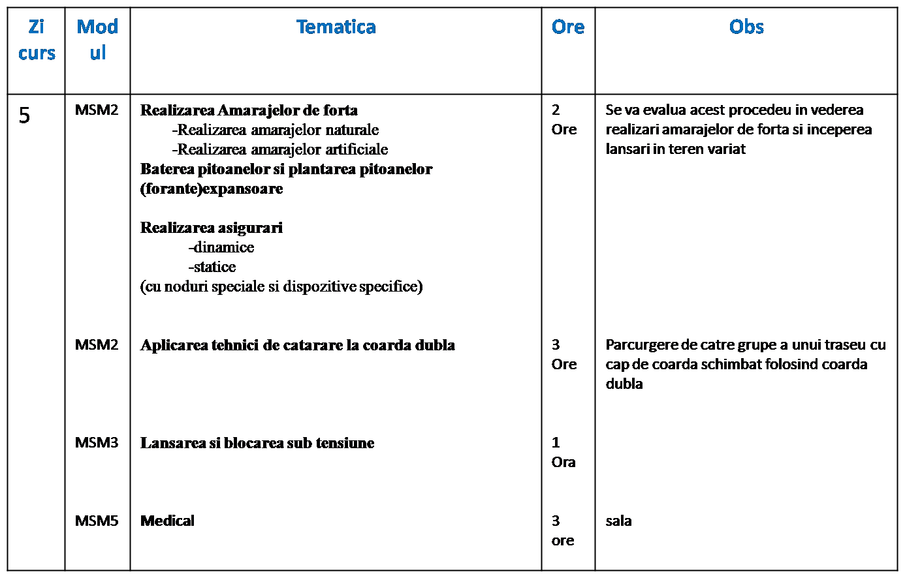
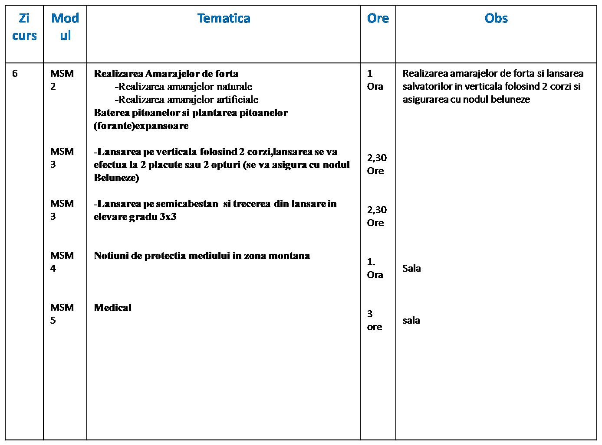
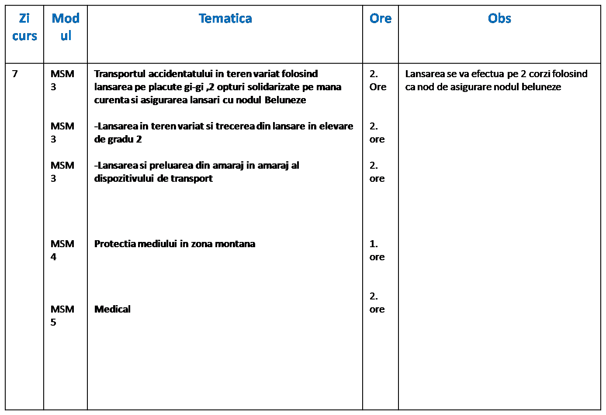
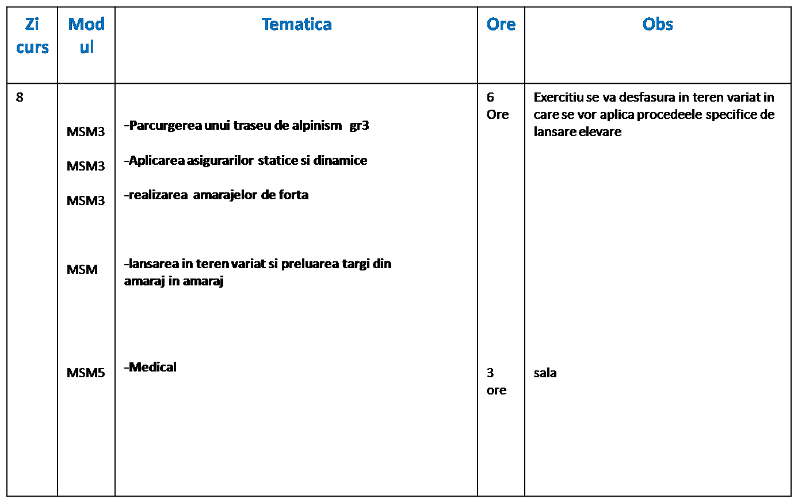
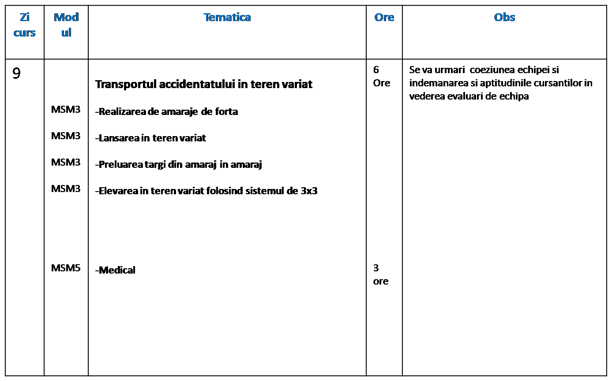
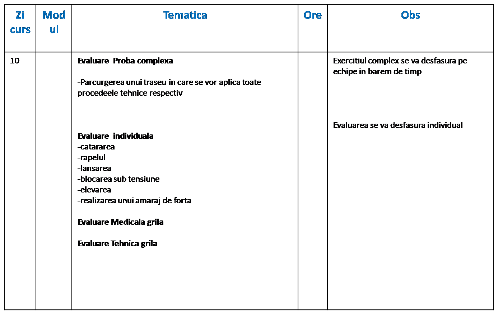
SCOALA VARA SALVAMONT INCEPATORI
CICLU 1 VARA FORMARE SALVATOR MONTAN
EVALUARE INTRARE IN SCOAlA CONFORM TEMATICI DE PREGATIRI LOCALA A ASPIRANTILOR
MATERIALE SPECIFI ACTIVITATI DE SALVARE MONTANA PE TIMP DE VARA
REALIZAREA AMARAJELOR ARTIFICIALE SI NATURALE
TEHNICA DE BAZA A RAPELULUI SI CATARARI
TEHNICA DE COARDA DUBLA ASIGURAREA SI LANSAREA
REALIZAREA AMARAJELOR DE FORTA SI LANSAREA PE 2 CORZI
LANSAREA SI PRELUAREA IN TEREN VARIAT A DISPOZITIVULUI DE TRANSPORT
EXERCITIU COMPLEX DE TRANSPORT
Transportul accidentatului in teren variat
EVALUARE FINALA